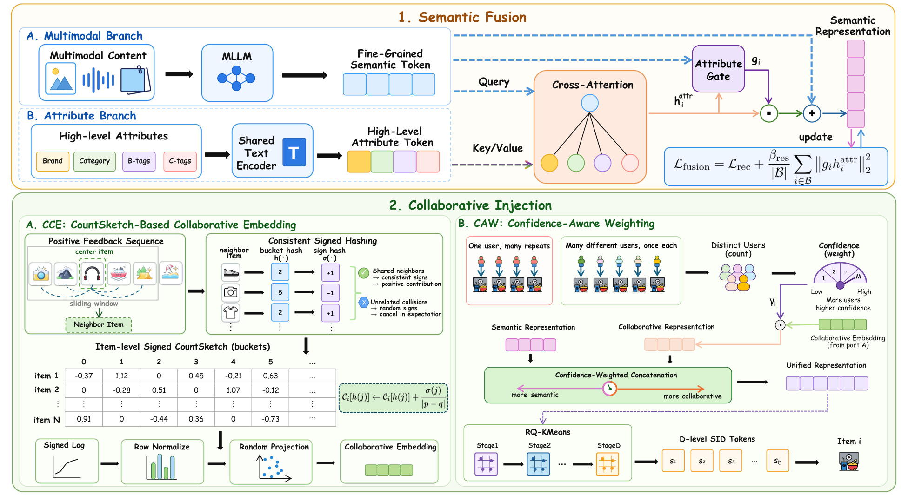
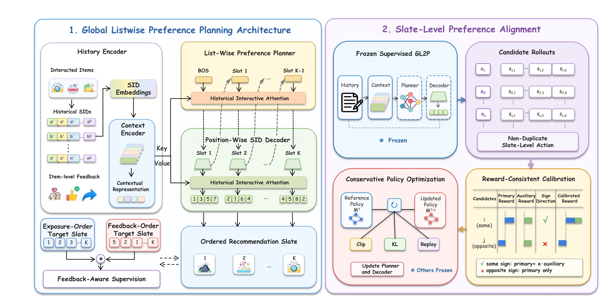
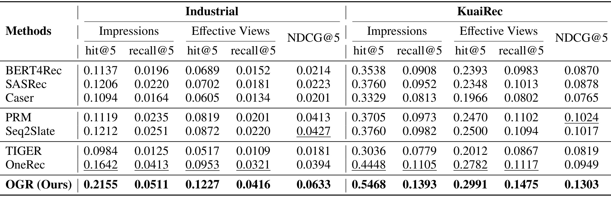
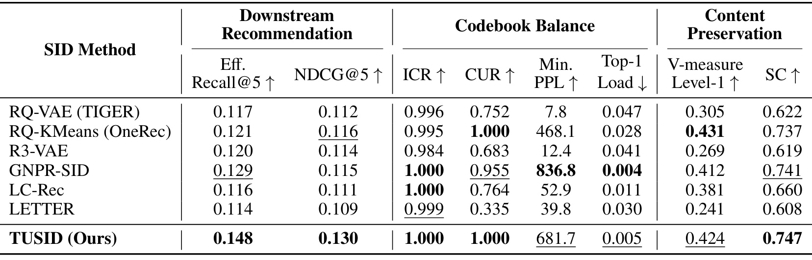
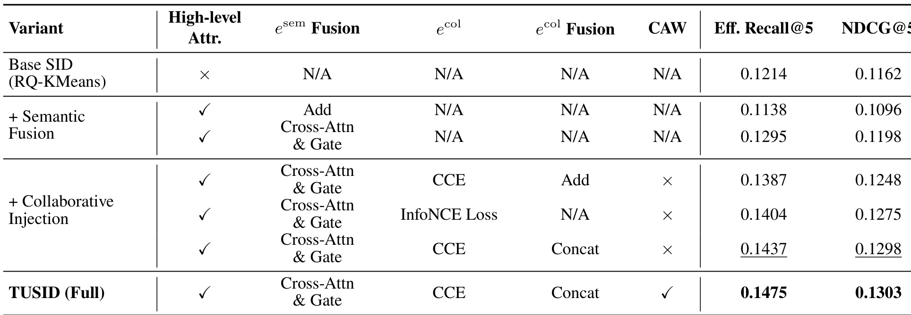
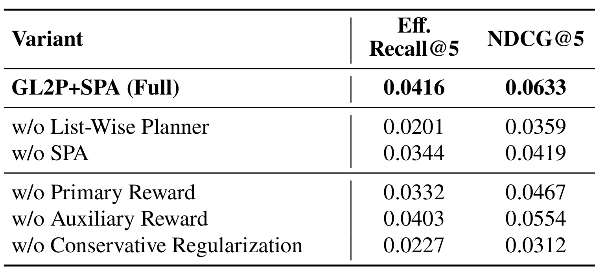
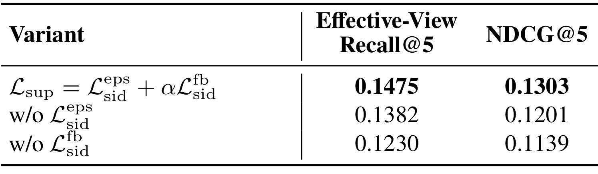
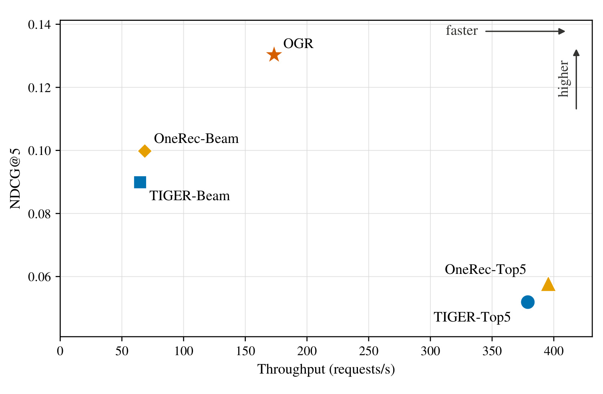

OGR：统一语义—协同 ID 的端到端生成式 Slate 推荐
《Once Generated, Ranked: End-to-End Generative Slate Recommendation with Unified Semantic-Collaborative IDs》由 Yang Hu、Jiayi Guo、Jingui Ma、Ning Li、Jiangling Qin、Yanming Li、Yang Deng、Xiaoshuang Chen 与 Kaiqiao Zhan 完成，一作主机构为 Kuaishou Technology，并有 Peking University 与 Nanjing University 合作者。论文于 2026 年 8 月 18 日公开，可从 arXiv:2608.17613 进入。它提出 OGR，把推荐对象从“下一个 item”提升为有顺序的五物品 slate：TUSID 先构造统一语义—协同 SID，GL2P 再规划列表级偏好并流水解码各位置 SID，SPA 最后用日志反馈做保守偏好对齐。截至本轮核验，未发现独立官方代码仓库。
级联推荐只能在上游召回到的候选中优化，而且生成、排序、重排的目标彼此割裂；已有生成式推荐虽能直接生成物品 SID，却仍把训练压在逐 token 似然上，既没有可靠融合语义与局部协同证据，也没有直接优化有顺序的 slate 整体效用。论文要解决的是：能否让候选生成、列表排序和偏好对齐进入同一条端到端生成链路。
1. 背景和问题
1.1 从“生成后再排序”到“生成即排序”
工业推荐常把召回、粗排、精排和重排拆成多级系统。这样做有吞吐、缓存和工程隔离上的现实优势，却留下两个结构性上限。其一，后级只能在前级给出的候选池里优化；一个本应进入最终列表的物品若没有被召回，排序器再强也无法恢复。其二，各阶段往往训练不同目标：召回重点击或相似度，精排预测单物品反馈，重排再处理多样性和位置关系。最终 slate 的整体效用并没有从候选空间到展示顺序被同一个目标贯通。论文把这种范式概括为 “Generated, Then Ranked”，而 OGR 试图直接从用户历史生成已经排好位置的 SID slate，即 “Once Generated, Ranked”。
Slate recommendation 的难点也不等于把 top-1 重复五次。列表中的物品会互相影响：相邻内容过于相似会降低多样性，前一位置可能改变用户对后一位置的接受度，展示次序还承担业务节奏。若模型只预测下一个 item，再用 beam search 连续生成五次，确实能让后一个 item 条件于前一个 item，但关键路径会变成长达 (K\times D) 的 SID token 链，错误也沿位置累积。若只做一次 next-item beam search，把分数最高的五个候选当成 slate，速度快，却没有显式学习位置之间的顺序依赖。OGR 由此同时追问两个问题：如何在列表级建模依赖，又如何避免 item-by-item 全串行生成。
1.2 SID 不只是压缩码，必须携带推荐可用结构
Semantic ID（SID）把物品映射成分层离散 token，使生成模型能共享相近物品的前缀结构，并避开巨大 atomic-ID softmax。已有路线常从内容 embedding 出发做 RQ-VAE 或 RQ-KMeans；这对冷启动和语义泛化友好，却不保证相同 SID 邻域对应真实用户行为中的共同出现。另一类方法用对比学习把协同关系对齐到连续语义空间，但随机正负样本难以保留距离不同的局部共现强度。论文认为，为 slate 生成服务的 SID 应同时回答“物品是什么”和“它在高质量行为序列的局部上下文里和谁一起出现”。
直接拼接协同特征也会引入流行度偏差。热门物品拥有大量行为，长尾或新物品则缺少可靠共现；若对所有 item 使用相同协同权重，少量偶然交互可能被当成稳定信号，热门物品又会以计数规模压倒内容语义。TUSID 因此没有把语义与协同看成等权双塔：语义分支始终是退路，协同分支只在“有多少不同用户提供过有效局部上下文”足够时增权。这个设计把冷启动问题显式放进 SID 构造，而不是等生成器上线后再靠规则修补。
1.3 逐 token 似然和列表效用之间的缝隙
即使 SID 足够好，next-token prediction（NTP）仍只奖励模型复现某个目标 token。它没有直接表达完整 slate 的有效播放、点赞、多样性、新颖度，也无法区分两个都可能出现的列表中哪个整体更受偏好。论文先用两条监督序列缓解：曝光顺序保持日志结构，反馈顺序按 item-level feedback 重新排列；但两条交叉熵仍属于固定目标模仿，不能比较多个候选 slate 的相对效用。因此 SPA 在监督模型之后增加策略对齐，不过它不是把未展示的新 slate 拿去在线探索，而是只在训练曝光日志中已有反馈的完整 slate 上计算奖励，参考策略和当前策略仅为这些动作打 likelihood。
这个边界决定了论文结论应该如何读。作者确实报告两套离线数据、组件消融、解码吞吐和 Kuaishou 线上 A/B；但“端到端”指生成空间、位置规划和训练目标被统一，并不意味着线上系统从此没有安全过滤、库存约束、去重或业务重排。SPA 也不是拥有反事实奖励的通用 RL：新生成或 counterfactual slate 没有观察反馈，会被排除在奖励校准之外。更准确的定位是，OGR 为生成式推荐建立一条列表级训练与解码链，并用保守日志对齐减少 NTP 和整体效用的错位；它是否能覆盖更大 (K)、更多硬约束和长期探索，仍需后续证据。
还有一个容易被“端到端”措辞遮住的识别问题：论文同时更换 SID、生成架构、监督顺序与对齐目标，主结果只能证明整套 OGR 组合优于所列 baseline，不能把全部提升归给某一个环节。好在作者安排了三层证据拆分。第一层固定 OGR backbone 比较不同 SID，检查 TUSID 是否独立改善推荐、码本利用和内容保持；第二层固定 TUSID，移除 planner、SPA、主辅奖励或保守约束，检查列表生成与对齐组件；第三层才把完整模型放进质量—吞吐图和线上 A/B。这样的实验链比只比较端点更接近因果归因，但依然缺少跨组件交叉消融，例如“普通 SID + GL2P+SPA”与“TUSID + 非列表 decoder”，因此 SID 与架构之间是否存在互相放大的效应还不清楚。
从推荐链路看，OGR 主要压缩的是“候选生成与排序分离”以及“各位置 SID 串行”两类边界，而不是所有线上决策。SID-to-item lookup 仍要保证每个生成 token 链映射到合法物品，candidate rollout 还要求 non-duplicate slate；库存、地域、年龄安全、作者打散、商业约束等通常也不能仅靠训练隐式满足。若这些硬条件仍在生成后过滤，过滤会改变位置依赖，甚至重新引入轻量重排。论文没有给 constrained decoding 或失败率，所以当前更现实的应用方式是把 OGR 作为强列表候选生成器，在严格合法性层之前输出较少但已具顺序结构的 slate，再测剩余规则对离线与线上增益的侵蚀。
2. 方法
2.1 TUSID 第一阶段：物品自适应的语义融合
TUSID 从两个视角描述物品 (i)。MLLM 编码图像、音频和文本，得到细粒度表示 (e_i^M)；共享文本编码器把 Brand、Category、B-tags、C-tags 转成四组高层属性向量，其中 B-tags 描述内容供给侧的定位、风格、情绪和运营方式，C-tags 描述用户需求、收益、场景和受众。属性不是直接相加，而是以 (e_i^M) 为 query、四组属性为 key/value 做 cross-attention，得到 (h_i^{attr})。随后使用 item-specific sigmoid gate (g_i) 做非对称残差融合：
符号解释：(e_i^{sem}) 是最终推荐感知语义表示，(e_i^M) 是保留的多模态语义主干，(h_i^{attr}) 是属性聚合，(g_i\in(0,1)) 决定当前 item 要注入多少高层属性。非对称意味着属性只能以残差修正主干，而不会把它替换；例如商品可以提高品牌属性的贡献，知识视频则可能更依赖内容深度与目标受众。核心不在多加一组标签，而在让每个物品自己决定哪类结构化属性值得改写其内容表示。
融合网络以 SASRec 下一物品预测目标 (L_{rec}) 训练，使属性选择服务推荐，而非只做内容重建。论文同时约束残差幅度：
符号解释：$B$ 是 SASRec 训练中的正物品和采样负物品集合，$\beta_{res}=0.001$ 控制残差正则；第二项惩罚过强属性注入，防止文本化的 Brand/Category/B/C-tags 淹没 MLLM 内容结构。训练完成后，这一表示进入协同注入与量化；线上生成器使用固定 SID 词表，并不会在每次请求里重新训练语义融合。
2.2 TUSID 第二阶段：CCE、CAW 与层次量化
Collaborative Injection 只读取训练切分中“高质量正反馈前缀”，明确排除 validation/test 交互以避免泄漏。对用户序列位置 (p) 的中心物品 (i)，窗口半径 (omega=5) 内位置 (q) 的物品 (j) 以 (1/|p-q|) 加权；邻近共现比远端共现更强。完整 item-item 矩阵过大，CCE 用共享 bucket hash (h) 与 sign hash (sigma\in{-1,+1}) 把局部分布写进每物品固定 256 桶的 Signed CountSketch：
符号解释：(C_i) 是中心物品 (i) 的 sketch，(h(j)) 决定邻居 (j) 写入哪个桶，(sigma(j)) 用随机正负号让无关碰撞的交叉项期望为零，(|p-q|) 保留局部距离。之后做 signed-log 抑制高频值、逐 item L2 归一化和共享随机投影，得到 128 维 (e_i^{col})。这不是从 sketch 反查某个邻居，而是把共享哈希空间本身当作协同特征映射。
CAW 用不同用户而非总交互次数衡量证据。令 (U_i) 为给物品 (i) 贡献过至少一次有效上下文更新的独立用户数，则：
符号解释：$\tau=0.5$ 控制置信度饱和速度，$\alpha_{col}=0.35$ 是协同支路最大权重，$\gamma_i$ 随独立用户支持增加但边际递减。若 $U_i=0$，则 $\alpha_i=0$，统一表示完全回退到语义；同一重度用户重复观看不会反复增加 $U_i$。对两条支路分别归一化后，TUSID 做平方根系数拼接：
符号解释：分号表示向量拼接，(e_i^{uni}) 是量化输入。平方根使两支路非零且单位归一时总体范数保持 1，改变的是语义/协同的相对贡献，而不是让热门物品拥有更大向量尺度。最后用四层 RQ-KMeans、每层 1,024 codes 递归量化残差，得到 (D=4) 的层次 SID；验证、测试和线上冻结 codebook，保证同一物品映射一致。

Figure 2 上半区说明语义分支为何以多模态 token 为 backbone：四类属性经共享文本编码器后只通过 cross-attention 与 gate 更新原表示，图右端还把 (L_{fusion}) 正则画在残差路径上。下半区的 CCE 从正反馈序列滑窗出发，共享哈希使共同邻居贡献同号、无关碰撞在期望上抵消；CAW 则用“很多不同用户各出现一次”与“一个用户重复很多次”的对比说明 (U_i) 的统计口径。图底部从 signed log、row normalize、random projection 到 confidence-weighted concatenation，再进入 RQ-KMeans，完整对应了从行为流到 SID token 的数据路径。它还揭示一个关键边界：协同信息来自离线日志并被冻结进 item ID，若行为分布快速变化，必须重算 sketch 和量化映射，而非期待在线 decoder 自动修复过期 SID。
2.3 GL2P：列表级规划与位置级 SID 流水解码
GL2P 先把用户历史中的每个物品 SID 的 (D) 层 embedding 求和，再加时间 embedding，经四层 history encoder 得到 (Z^h)。列表规划器不直接输出 SID，而是在更粗的 preference space 先安排 (K) 个位置。训练时将目标位置 (m) 的 SID embeddings 聚合成 (g_m)，右移后作为 teacher-forced 输入：
符号解释：(E) 是四层共享的 SID embedding 表，(s_m^d) 是 slate 位置 (m) 的第 (d) 层 token，(BOS) 启动列表规划，(Q^{tr}) 不包含当前目标而只包含此前位置。因果自注意力建模已经计划的位置，cross-attention 从 (Z^h) 读取用户历史，得到：
符号解释：(p_m) 是第 (m) 个展示位置的计划偏好，不是具体 item；(P) 的因果结构负责跨位置依赖。推理时 planner 从 BOS 开始，使用前一个已生成表示继续产生下一位置。每当 (p_m) 可用，position-wise decoder 在该位置内部自回归生成四层 SID：
符号解释：(s_m^{<d}) 是同一 item 已生成的 SID 前缀；位置间依赖已被 (p_m) 编码，所以位置 (m) 的 SID 链开始后，planner 可以并行规划 (m+1)。它并没有取消位置内的 (D) 步依赖，而是把原本 (K\times D) 的二维串行链改为两条重叠流水线，关键路径趋近 (K+D)。

Figure 1 左侧把这一流水线画得很清楚：History Encoder 聚合 interacted items、historical SIDs 和 item-level feedback；List-Wise Preference Planner 以 BOS 启动并沿 Slot 1 到 Slot K-1 建模列表结构；下方 Position-Wise SID Decoder 在每个 planned preference 出现后立即展开该位置 token，绿色虚线显示规划与解码交错。Exposure-order 与 feedback-order 两个 target slate 汇入同一监督目标，说明顺序结构和反馈偏好不是后处理规则，而是模型训练输入。右侧 SPA 则复制一个 frozen supervised GL2P 作为 reference policy，只让 planner 和 decoder 更新；候选必须是 non-duplicate slate-level action，奖励同向时才混入 auxiliary，否则保留 primary。图中雪花与更新箭头共同限定了对齐范围，防止把 SPA 误解成重训 TUSID 或 history encoder。
双监督分别构造曝光顺序 (Y_u^{eps}) 和按 item feedback 重排的 (Y_u^{fb})，对每条 slate 的每位置、每 SID 深度做交叉熵。组合目标为：
符号解释：(L_{sid}^{eps}) 保留日志展示结构，(L_{sid}^{fb}) 把正向反馈更强的 item 顺序编码进生成，(alpha=0.3) 控制反馈分支权重。这个设计仍是 likelihood imitation：它能教会模型两种有意义的次序，但不能直接在多个完整 slate 之间比较总体效用，因此才需要下一阶段 SPA。
2.4 SPA：奖励一致校准与保守策略优化
SPA 的动作集 (A_u) 只由用户 (u) 的训练曝光日志中的完整 slate 构成；新生成或反事实 slate 没有观察反馈，不参与奖励校准。主奖励把每位置 effective view、completion、like、share 分别赋予 (+0.10,+0.15,+0.20,+0.15)，immediate skip 与 dislike 分别为 (-0.15,-0.25)，再对 (K) 个位置平均。辅助奖励以 0.90 权重计算 slate 内语义余弦多样性，以 0.10 权重奖励低曝光 item 的新颖度。两类奖励都在同一用户的候选集合内标准化为 (delta_{u,a}^{pri}) 与 (delta_{u,a}^{aux})。校准只在二者同号时引入辅助项：
符号解释：(a) 是完整 slate action，(Delta_{u,a}) 是最终偏好强度；(kappa_{u,a}) 在主辅分数同号时按二者绝对值比率缩放，异号时为 0。因而多样性不会在和真实反馈方向冲突时反客为主。这是一种 exposure-only 的保守校准：它提高已观察 slate 的利用效率，却不提供未展示 slate 的反事实价值。
冻结监督模型参数为 $\theta_0$，当前策略为 $\theta$，两者计算完整 SID slate 的 log-likelihood，重要性比率 $\rho_{u,a}=\exp(\ell_\theta(a|u)-\ell_0(a|u))$。策略损失采用 PPO 风格 clipping：
符号解释：(N_A) 是保留的 user-action 对数，(epsilon=0.1) 是 clipping 半径。min 结构限制一次更新借重要性权重放大收益或损失，避免只凭有限曝光日志让策略远离监督生成器。论文还将候选集上的 reference/current likelihood softmax 为 (q_0,q_\theta)，加入正向 KL：
符号解释：(N_U) 是保留用户数，(q_0) 是参考候选分布，(q_\theta) 是更新策略分布。最终再回放监督目标：
符号解释：$\gamma=0.05$ 约束候选分布漂移，$\eta=0.1$ 防止对齐遗忘可生成性和日志结构；SPA 学习率 $10^{-5}$、batch 64、训练 3 epochs。对齐时只有 list-wise planner 与 position-wise SID decoder 可训练，其他模块冻结。训练与推理的边界因此很清楚：奖励、ratio、KL 只在离线对齐阶段存在，线上一次请求只执行历史编码、位置规划和 SID 解码。
3. 实验结果
3.1 数据、基线与复现口径
实验使用 Kuaishou 私有工业数据与 KuaiRec。工业数据含交互序列、多模态内容、高层属性、曝光日志和 item feedback，但数据规模与完整奖励 schema 因保密未披露；KuaiRec 是公开 fully-observed 推荐数据。两者都按时间排序并采用 leave-five-out，最大历史长度 128，生成 slate 大小 (K=5)。SID 为四层、每层 1,024 codes，beam width 20。离线训练在 NVIDIA L20 上进行，报告 2025—2029 五个种子的均值；论文没有给方差或显著性。
baseline 分三类：BERT4Rec、SASRec、Caser 是序列推荐器；PRM、Seq2Slate 是给定候选上的 listwise reranker；TIGER、OneRec 是 SID 生成推荐。作者称生成 baseline 参数规模与 OGR 的 32 MB 可比，但传统模型和 reranker 的候选条件与生成空间并不完全相同。指标又分两组：Impressions 的 Hit/Recall 检查能否复现曝光，Effective Views 的 Hit/Recall 检查正反馈 item，NDCG@5 衡量列表位置质量。读 Table 1 时需要同时看任务空间、指标与 baseline 类别，不能把单个相对提升当成统一系统替换结论。
3.2 离线主结果：两套数据是否一致

Table 1 在工业数据上显示，OGR 的 Impression hit@5/recall@5 为 0.2155/0.0511，最强生成 baseline OneRec 为 0.1642/0.0413；Effective-View hit@5/recall@5 从 OneRec 的 0.0953/0.0321 提到 0.1227/0.0416。最关键的 NDCG@5 是 0.0633，强于最好的 reranker Seq2Slate 0.0427，相对增益约 48.2%。这说明收益不是只来自扩大生成空间：在强调位置的 NDCG 上，显式 list-wise planner 也超过候选内 reranker。但不同方法是否使用完全相同的候选曝光约束、训练样本和调参预算，论文没有给到足以做严格系统归因的细节。
KuaiRec 上 OGR 的 Impression hit@5/recall@5 为 0.5468/0.1393，OneRec 为 0.4448/0.1105；Effective-View hit@5/recall@5 为 0.2991/0.1475，OneRec 为 0.2782/0.1117。NDCG@5 达到 0.1303，对最强基线 PRM 的 0.1024 相对提升约 27.2%。两套数据方向一致增强可信度，不过增益形态不同：KuaiRec 的 Effective-View hit 只提升约 7.5%，Recall 与 NDCG 增益更大，暗示 OGR 的优势更多体现在覆盖更多正反馈 item 与排对位置，而不是单纯让 top-5 更容易命中至少一个。公开集不能复核 TUSID 的全部工业多模态/属性构造细节，私有集又不可独立复现；这两类证据是互补，而不是彼此替代。
3.3 SID 质量与 TUSID 消融

Table 2 固定 OGR backbone 和 codebook size，把 SID 方法本身单独比较。TUSID 的 Effective-View Recall@5/NDCG@5 为 0.148/0.130；次高 Recall 是 GNPR-SID 的 0.129，次高 NDCG 是 RQ-KMeans 的 0.116。与此同时，TUSID 的 ICR 与 CUR 都为 1.000，表示无碰撞且四层码本覆盖完整；Min. PPL 681.7、Top-1 Load 0.005 虽不是全表最优——GNPR-SID 为 836.8/0.004——但仍明显优于 RQ-VAE 的 7.8/0.047。内容保持上，V-measure 0.424 略低于 RQ-KMeans 的 0.431，SC 0.747 则是最高。更稳妥的结论是 TUSID 找到推荐质量、码本平衡和语义凝聚的良好折中，而不是每个 tokenizer 指标全面第一。

Table 3 揭示这种折中从哪里来。Base RQ-KMeans 为 0.1214 Recall、0.1162 NDCG；把高层属性直接 Add 到语义反而降到 0.1138/0.1096，说明异构属性不是越多越好。改为 Cross-Attention & Gate 后回升到 0.1295/0.1198，支持 item-specific 选择和残差保护。加入协同后，CCE+Add 为 0.1387/0.1248，InfoNCE 为 0.1404/0.1275，CCE+Concat 为 0.1437/0.1298；完整 CAW 再到 0.1475/0.1303。Concat 优于 Add 表明保持两类结构的独立子空间比强行重合更合适，CAW 的最后增量则支持按独立用户证据调权。但 CAW 的绝对增益相对前几步较小，论文没有按热门/长尾/新物品分桶，尚不能直接证明收益主要来自冷启动。
3.4 GL2P、SPA 与双监督是否各有贡献

Table 4 的完整模型 Effective-View Recall@5/NDCG@5 为 0.0416/0.0633。去掉 List-Wise Planner 后降到 0.0201/0.0359，几乎损失一半 Recall，且作者已把其参数预算重新分配给 encoder/decoder；因此差距不只是参数量，而支持粗粒度位置计划对列表协调的重要性。去掉 SPA 为 0.0344/0.0419，证明两条监督似然仍不足以优化完整 slate。去主奖励降到 0.0332/0.0467，去辅助奖励为 0.0403/0.0554，显示真实反馈方向是主轴，多样性/新颖度是补充。最剧烈的 NDCG 退化之一来自去 conservative regularization：0.0227/0.0312，说明 exposure-only 奖励下限制策略漂移不是装饰，而是稳定性前提。

Table 5 在 KuaiRec 上将完整双监督的 0.1475/0.1303 与两个单分支缺失版本比较。去掉 exposure-order 损失后为 0.1382/0.1201，去掉 feedback-order 损失后为 0.1230/0.1139；反馈序分支影响更大，符合它直接把 item-level response 转成目标顺序的角色。但曝光序仍提供约 0.0093 Recall 和 0.0102 NDCG 的增量，说明日志中的展示结构包含反馈排序无法替代的信息。这里也存在因果限制：反馈重排规则和事件权重来自同一日志，若曝光策略强烈偏置某类 item，两条目标可能共同继承旧系统偏差；论文没有 inverse propensity weighting 或随机曝光对照。
3.5 解码效率与线上 A/B
Beam-5 对每个位置依次生成 (D) 层 SID，顺序深度是 (KD)；Top-5 只做一次 next-item beam search，各 item SID 并行，深度是 (D)，但缺少列表依赖。OGR 中第 (m) 个位置的第 (d) 个 token 在经过 (m) 次规划和 (d) 次位置内解码后出现，完整 slate 的关键路径为 (K+D)。在论文的 (K=5,D=4) 配置下，Beam-5 深度 20、OGR 深度 9，理想关键路径比为 (20/9\approx2.22)。这个复杂度只描述 sequential dependency，不等价于端到端 latency；编码器、beam kernel、并行利用率和通信仍会影响实测。

Figure 3 把横轴 requests/s 与纵轴 NDCG@5 同时展示。OGR 位于约 175 requests/s、0.13，NDCG 最高；TIGER-Beam 与 OneRec-Beam 约在 60—70 requests/s，质量分别约 0.09 与 0.10。作者报告 OGR 对二者的实测吞吐提升为 2.43× 与 2.49×，和关键路径缩短方向一致。TIGER-Top5 与 OneRec-Top5 可接近 380—400 requests/s，却只有约 0.05—0.058 NDCG：速度来自一次 next-item 搜索，而非更高效地建模有序 slate。图因此支持“OGR 改善质量—效率折中”，但没有报告 p50/p99 延迟、batch size、显存和不同 (K,D) 的扩展曲线，不能据此推断任意服务配置都保持同样倍数。
线上 A/B 在 Kuaishou 使用 3% 生产流量、持续 1 周，相对现有系统 Effective Views +1.120%、Comments +2.954%、Likes +0.505%、Forwards +1.255%。这是论文从离线 NDCG 走向真实反馈的重要证据，也说明提升没有局限在论文自定义 reward。可是样本量、置信区间、分端/分人群、留存、时长、负反馈、延迟与资源 guardrail 都未披露；完整工业 reward schema 也因保密缺失。因而线上结果可支持“在一次受控流量实验中多项核心互动同向改善”，不支持“已证明长期、全量、无代价上线”。
4. 总结
4.1 我对贡献与证据的判断
OGR 最有价值的地方是把三个经常分开处理的问题连接起来。TUSID 用 item-adaptive 属性门控、距离加权 Signed CountSketch 和独立用户置信度，先让 SID 同时承载内容与局部协同结构；GL2P 把跨位置依赖放在 preference planner，把位置内 token 链留给 SID decoder，并以流水重叠降低关键路径；SPA 再用同一用户曝光 slate 的主辅奖励校准、clipping、KL 和监督回放，把列表整体偏好引入 NTP 之外。Table 1 的双数据集增益、Table 2—5 的分层消融、Figure 3 的吞吐折中和 3% 流量 A/B 彼此衔接，证据链比只报一个公开集更完整。
对生成式推荐工程，论文提供的不是“删掉所有级联模块”的许可，而是一个可测试的统一候选：SID tokenizer、list-wise planner、position-wise decoder 和 conservative alignment 可以分别灰度、分别诊断。对 LLM/RAG/agent 个性化也有迁移价值：先在粗粒度计划空间表达多个输出单元的相互关系，再并行展开每个单元的 token；偏好对齐时只让辅助目标在主目标同向时参与，可减少多目标 reward 相互拉扯。但这种迁移必须保留 OGR 的证据边界，尤其不能把 exposure-only 日志对齐说成掌握未见动作价值。
4.2 局限、复现与后续跟进
当前至少有六项局限。第一，工业数据规模、完整奖励 schema、显著性与 guardrail 未公开，线上增益无法独立审计。第二，KuaiRec 与工业数据都使用历史 128、slate 5；更长历史、更大列表和强业务约束下的 (K+D) 优势未验证。第三，CCE 固定 hash、窗口和离线前缀，行为漂移后何时重建 SID、重建是否破坏线上兼容性没有答案。第四，CAW 没有热门/长尾/冷启动分桶，独立用户置信度的受益对象尚属机制推断。第五，SPA 只给 logged exposure slate 奖励，仍继承旧曝光策略偏差，也没有反事实校正。第六，尚未核验到官方代码，TUSID 数据处理、反馈序排序、non-duplicate candidate 组合和吞吐测量难以复现。
后续应优先做四件事。其一，代码开放后先逐项复现 Table 1—5，并报告五个种子的方差和显著性，而不仅是均值。其二，按 head/torso/tail、新物品、不同 (U_i) 分桶，验证 CAW 是否真正改善稀疏 item，而非只提升整体。其三，在 (K\in{5,10,20})、(D\in{3,4,6}) 下测吞吐、p99、显存与质量，检查 (K+D) 理论能否转化为硬件收益。其四，为 SPA 增加 propensity 校正、随机探索或可靠的离线反事实评估，并长期监控多样性、新颖度、负反馈和留存。只有这些问题补齐，OGR 才能从一次有效的统一框架，进一步成为可复现、可治理、可持续更新的生成式 slate 系统。
总体而言，论文最可信的主张是：在给定五物品 slate、四层 SID 与现有日志反馈条件下，统一语义—协同 ID、列表级规划、流水位置解码和保守偏好对齐能够同时改善离线排序质量、生成吞吐与一次线上 A/B 的多项互动指标。 它尚未证明端到端生成可以无条件替代生产级召回—排序栈，但已经把“生成候选”和“组织列表”从两个阶段改写为一个可以共同优化、共同消融的模型问题。